Paris 8e
Rue de Berri, à deux pas des Champs-Élysées : un appartement sur deux niveaux, redessiné pour la lumière. Pièces d'eau gainées de grands formats veinés, cuisine taupe, bibliothèque sculptée en laiton. Une palette courte, tenue d'une pièce à l'autre.
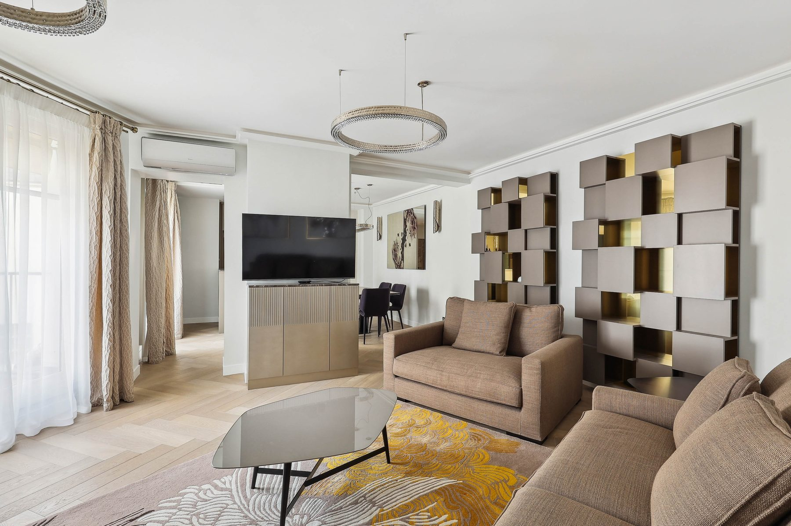
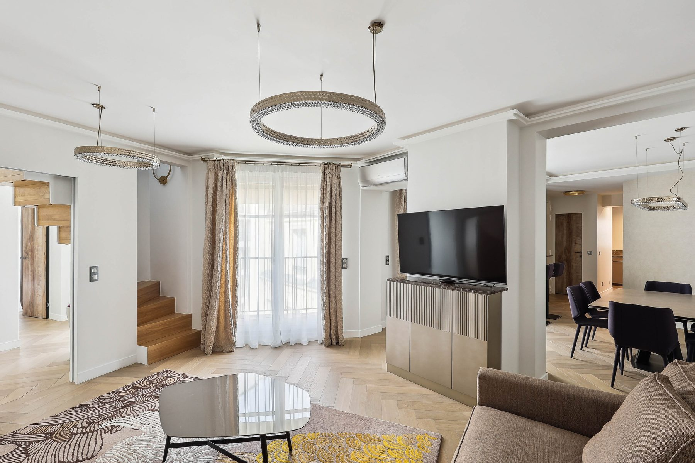
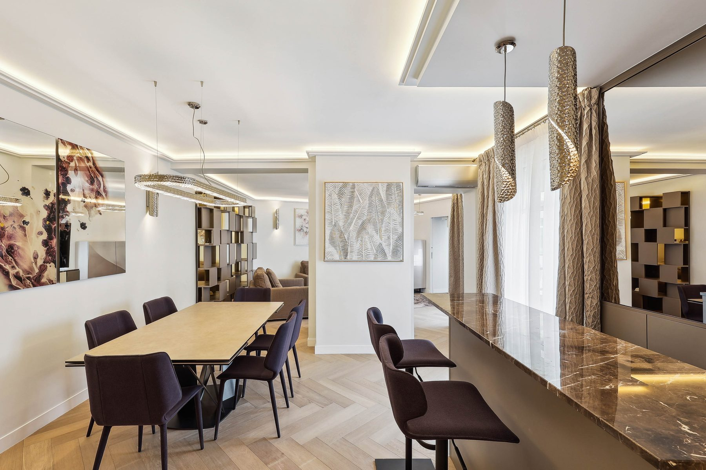
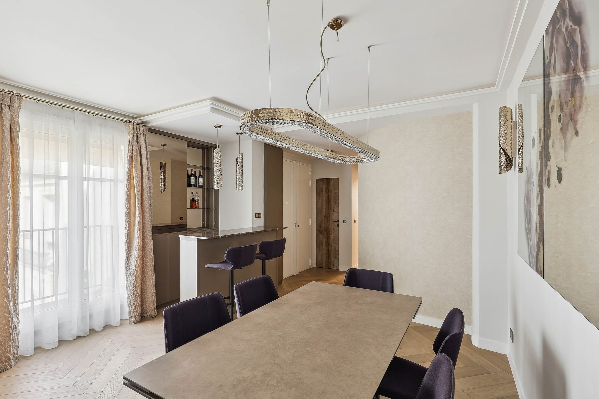
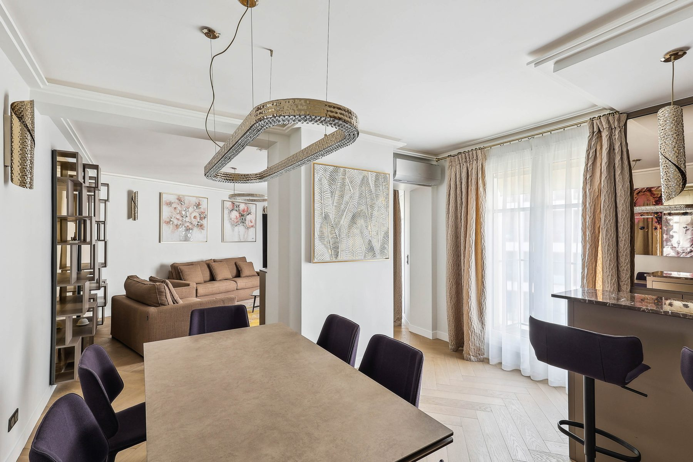
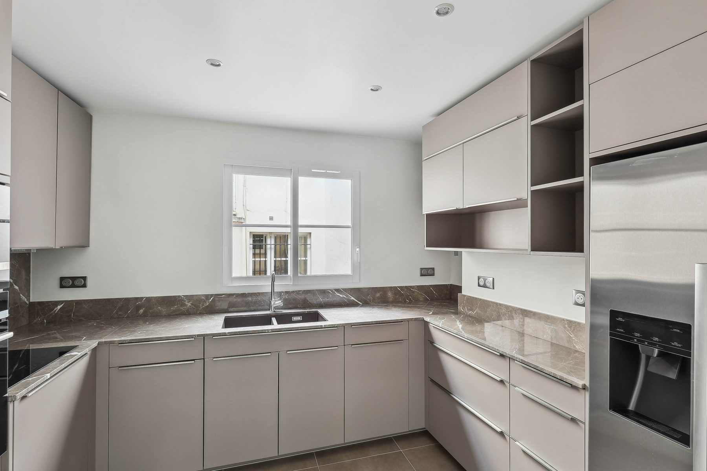
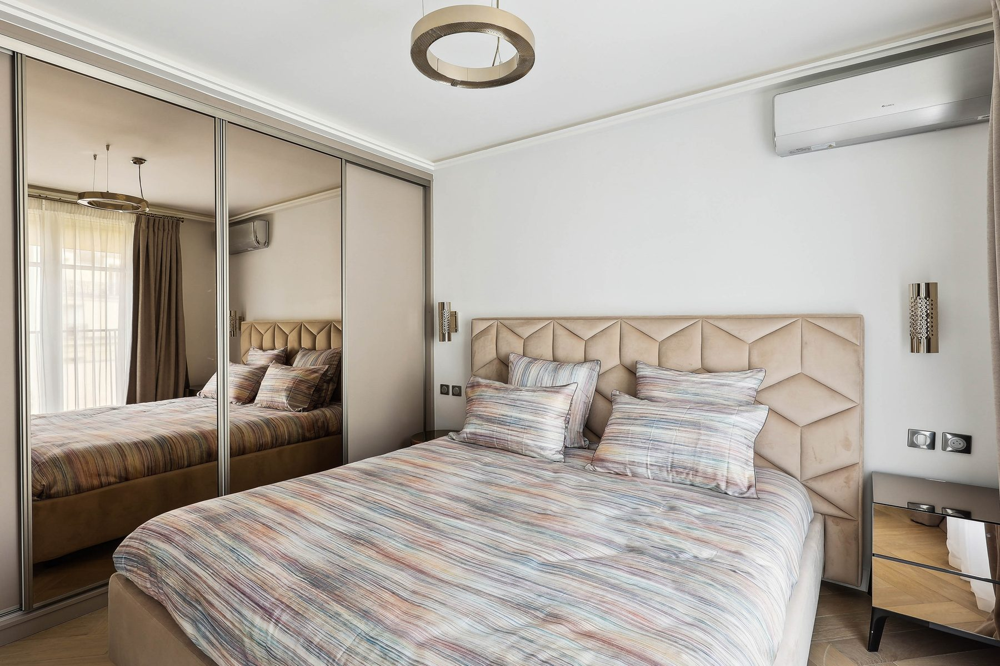
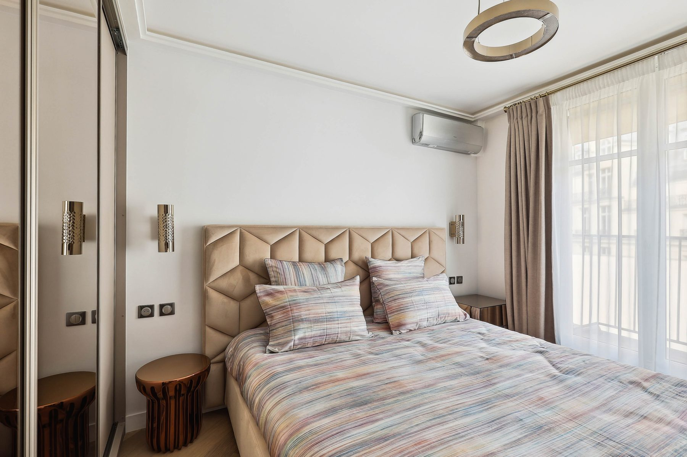
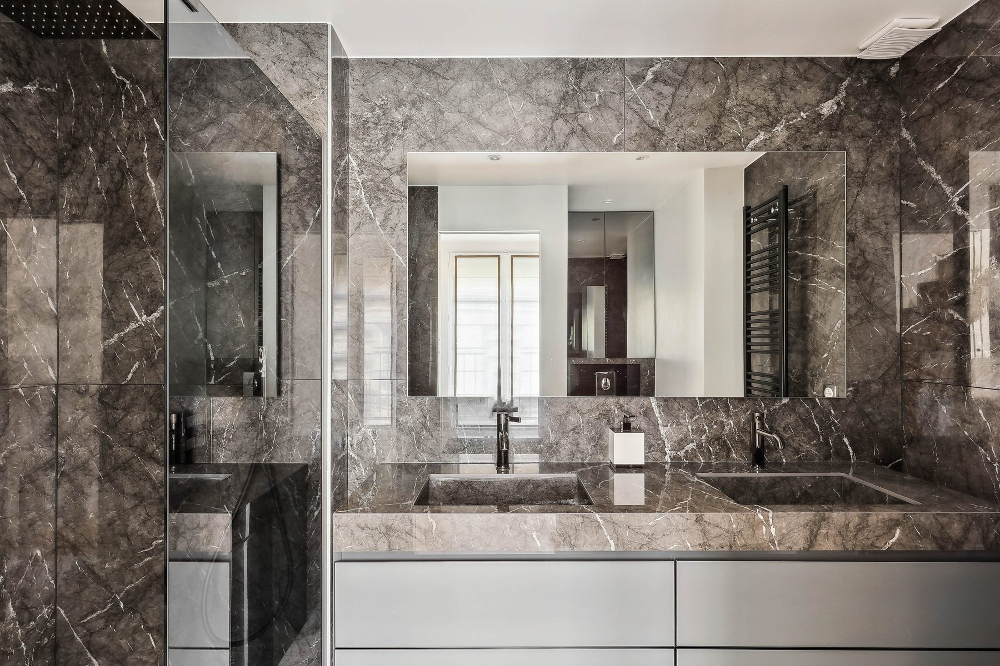
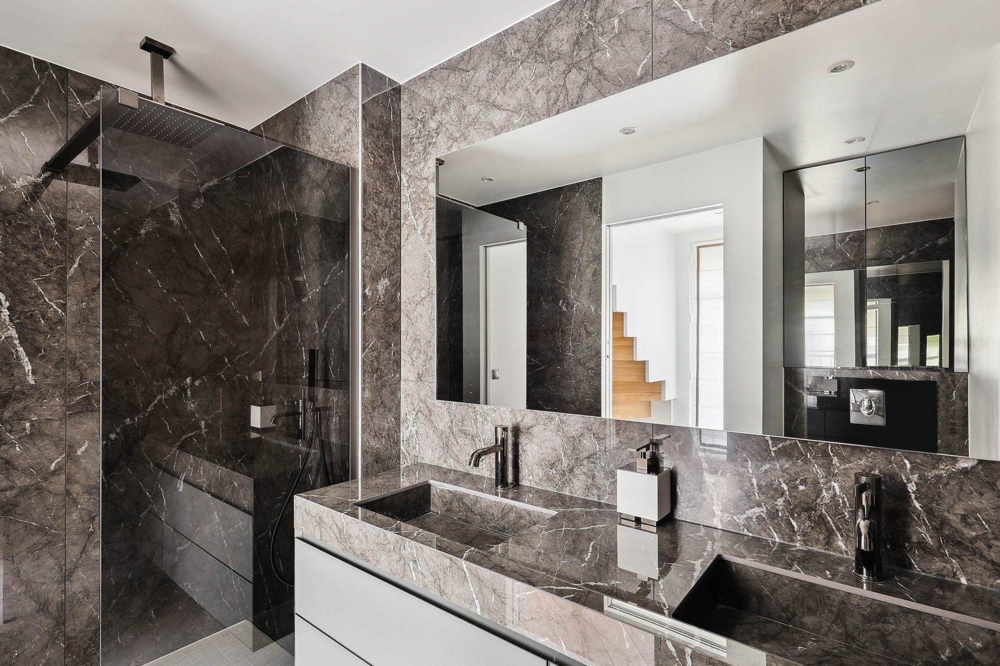
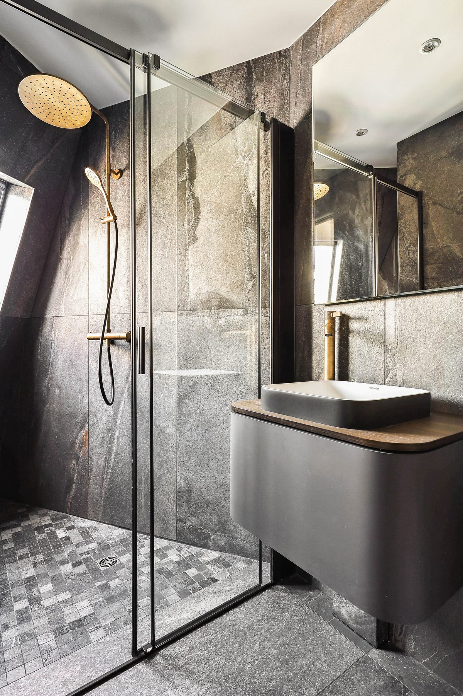
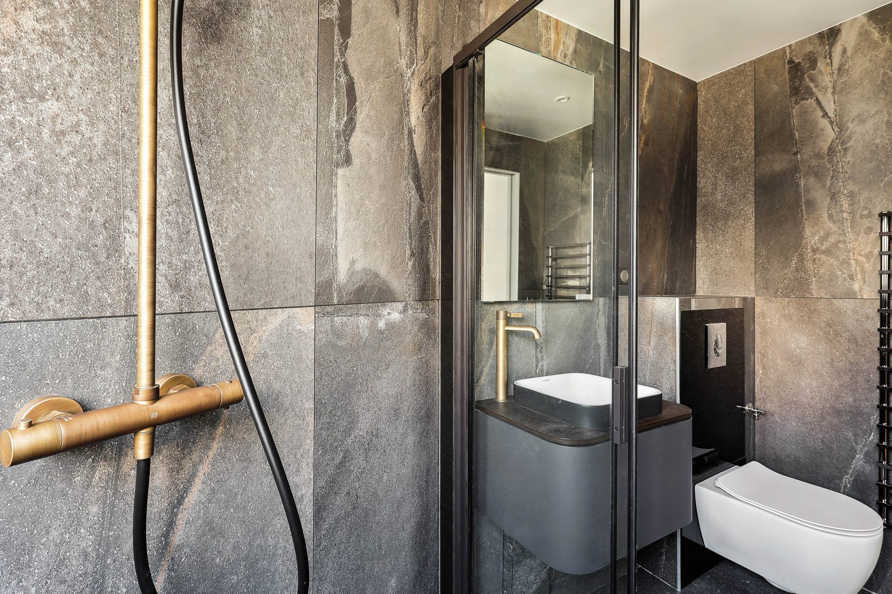
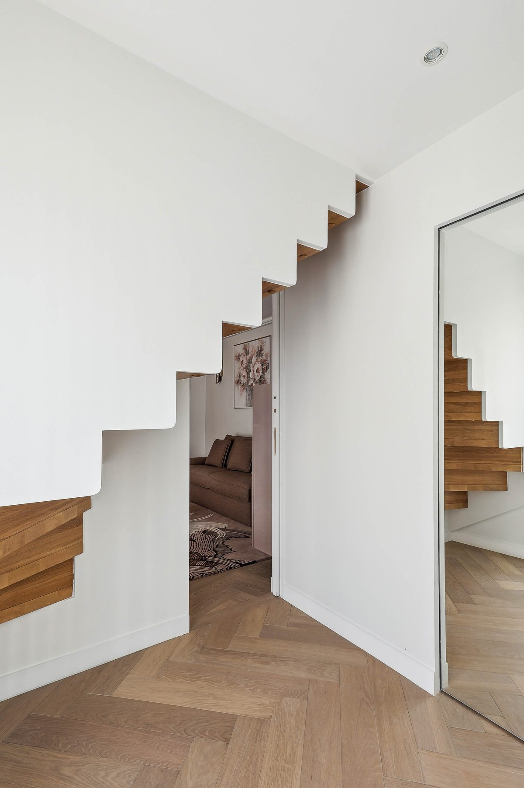
La rue de Berri relie l'avenue des Champs-Élysées au faubourg Saint-Honoré, dans le 8e arrondissement. L'appartement s'y développe sur deux niveaux, reliés par un escalier en chêne au limon blanc découpé, traité comme une sculpture plutôt que comme un simple passage. Les hautes fenêtres et les voilages filtrants donnent le ton : tout le projet est pensé pour garder la lumière et la faire circuler d'une pièce à l'autre.
Dans le séjour, la bibliothèque est composée de blocs en relief, crème et laiton, qui jouent avec la lumière du jour selon l'heure. Elle structure le salon sans le fermer, et répond aux grandes suspensions en anneau qui tiennent la hauteur sous plafond. Les canapés taupe, le tapis aux reflets dorés et le parquet en bâtons rompus composent une palette courte et chaude, tenue d'un bout à l'autre de l'appartement.
La salle à manger s'organise autour d'une longue table entourée de chaises en velours prune, sous un lustre ovale en métal ciselé. Elle se prolonge par un comptoir de bar en pierre éclairé par des suspensions cylindriques en laiton. La cuisine taupe en U, au plan de travail de pierre, intègre l'électroménager dans la menuiserie pour que rien ne vienne rompre la continuité des façades.
Les salles de bains sont entièrement habillées de grands formats veinés de gris, du sol au plafond, pour réduire les joints au strict minimum. Doubles vasques, douches à l'italienne vitrées, robinetterie dorée ou noire selon la pièce : chaque salle d'eau a son caractère, mais toutes parlent la même langue que le reste de l'appartement.
Berri rejoint les rénovations conduites par John Rozenblum dans le 8e arrondissement de Paris, aux côtés de Marbeuf, de Champs Élysées et de la rue Daru.
Ce projet fait partie des réalisations de design d'intérieur à Paris de John Rozenblum. Pour discuter d'un projet similaire ou d'une rénovation sur mesure, prenez contact.
Un projet ?
Chaque projet commence par une conversation. Partagez votre vision — je m'occupe du reste.
Prendre contact